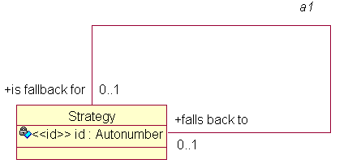

Role names in associations are very important, and should be verbs or verb phrases. Each end of the association must be named; the object of the verb phrase is the class at the same end as the name, the subject is the class at the other end. So, for example, you might have Window "appears on" Screen, Screen "displays" Window.

Often the role names will be inverses of each other, but sometimes things really do seem different depending on where you're standing.
You need to think carefully about the multiplicity of associations; they capture application rules and policies, which it's important to get right.
Clearly each Screen "displays" a number of Windows, but can a Window "appear on" more than one Screen? (perhaps, if you have multi-headed display capability). Can you have a Window which "appears on" no Screens? (well, no, not if your display technology is X--in which case "appears on" may not be quite right either, since the application could be iconised).
Unconditional multiplicity is good; if each end of an association is conditional (0..1, 0..n), maybe you should think more carefully about it. Perhaps there's some super/subtype (inheritance) relationship lurking in there.
In the Executable UML view, an associative class implements an associative relationship. One reason for needing this is that the association is many-to-many; other reasons include the existence of attributes that only make sense while the association exists.
Previous versions of ColdFrame used Rational Rose, which implemented the association and the associative class as two different things. UML (and therefore ArgoUML) regard them as one thing, an AssociationClass.
ColdFrame merges the class and association aspects of an association class into one package.
In the original Shlaer-Mellor method, associations and inheritance relationships needed to be "formalised" by the use of "referential attributes". Considering Window "appears on" Screen, where clearly there are many Windows but only one Screen, you'd need a referential attribute screen id in the Window instance.
ColdFrame, however, follows Executable UML; you usually don't need to provide referential attributes (it would be quite cumbersome to do so, since ArgoUML, as is typical for a UML tool, is unaware of the concept). Instead, ColdFrame automatically implements the relationships. Sometimes it needs a little help, for example for complex formalization or in a symmetric association.
Consider R8, Licence "is issued by" Licensing Office. The identifier of Licence consists of the licence number and also the issuing Licensing Office, since the various offices don't use disjoint licence number ranges. In this case, we'd specify the attribute as
«id» Issuing_Office : Licensing_Office
and include the tag {formalizes=R8}.
If you have a symmetrical association of multiplicity 1:1, 1c:1c, 1-(1:1) or 1-(1c:1c), ColdFrame requires you to tell it how the association is to be formalized.
You do this by marking one of the roles (AssociationEnds) with the stereotype «source».
Each Association maps into
All association packages include a Link operation. In the case of the Library example below, this would be
procedure Link (Is_On_Loan_To : Borrower.Handle; Is_Borrowing : Book.Handle);
whereas if the association was implemented in an association class Current Loan (not a bad idea; where else would you put the date when the book is due for return?) the Link operation would be a function:
function Link (Is_On_Loan_To : Borrower.Handle; Is_Borrowing : Book.Handle) return Current_Loan.Handle;
All association packages include an Unlink operation. In the case of the Library example below, this would be
procedure Unlink (Is_On_Loan_To : Borrower.Handle; Is_Borrowing : Book.Handle);
whereas if the association had had an association class Current Loan the Unlink operation would be
procedure Unlink (Current_Loan_Handle : Current_Loan.Handle);
Note that in this case Unlink doesn't actually delete the association instance; this is because you may have cleaning-up jobs to do (unlinking other associations with the association instance, for example).
For associations in an associative class, a Find operation is generated in Domain.Association_Class which, given the handles of two potentially associated instances, returns the corresponding association class's handle (or null, of course).
The implementing referential attrubute, and its assciated "get", "set" operations are in the public part of the class package but aren't intended for general use; use the Domain.Association package's operations instead.
In the present implementation (10.ii.12), each navigation has a natural and a hard direction. The natural direction is from the class in which the referential attribute is implemented.
Normally you have no choice on where the referential attributes go; for example, in a 1:m association, ColdFrame puts the referential attribute at the many end. However, in symmetric associations, you should put the required {source} tag on the end that you want to be able to get to more efficiently.
It can be difficult to work out which of the navigation operations you need to use.
In the diagram, Domain.A2 has two navigation operations:
This is as though is borrowing() were an operation of Book and is on loan to() were an operation of Borrower.
It may help to ask yourself, as you write the assignment
Borrower_H := A2.what goes here (Book_H);
"what is the result that role this starting instance?"
which in this case is "what is the Borrower that is borrowing this Book?"

It's more difficult with reflexive associations, and if you get it wrong the compiler won't be able to help you. The litte mnemonic above needs adjustment;
"what is the other Strategy that role this Strategy"
and the answer is probably "is fallback for".
It's quite legal to have more than one association between a pair of classes. For example, A1 Book is on loan to Borrower for current loans, vs A2 Book has been on loan to Borrower for historical loans.
The navigation operations Is_On_Loan_To and Has_Been_On_Loan_To both return temporary collections of references to Book instances. You can't move a Book instance from A1 to A2 when it's returned by moving the references between these collections; instead, use A1.Unlink and A2.Link.